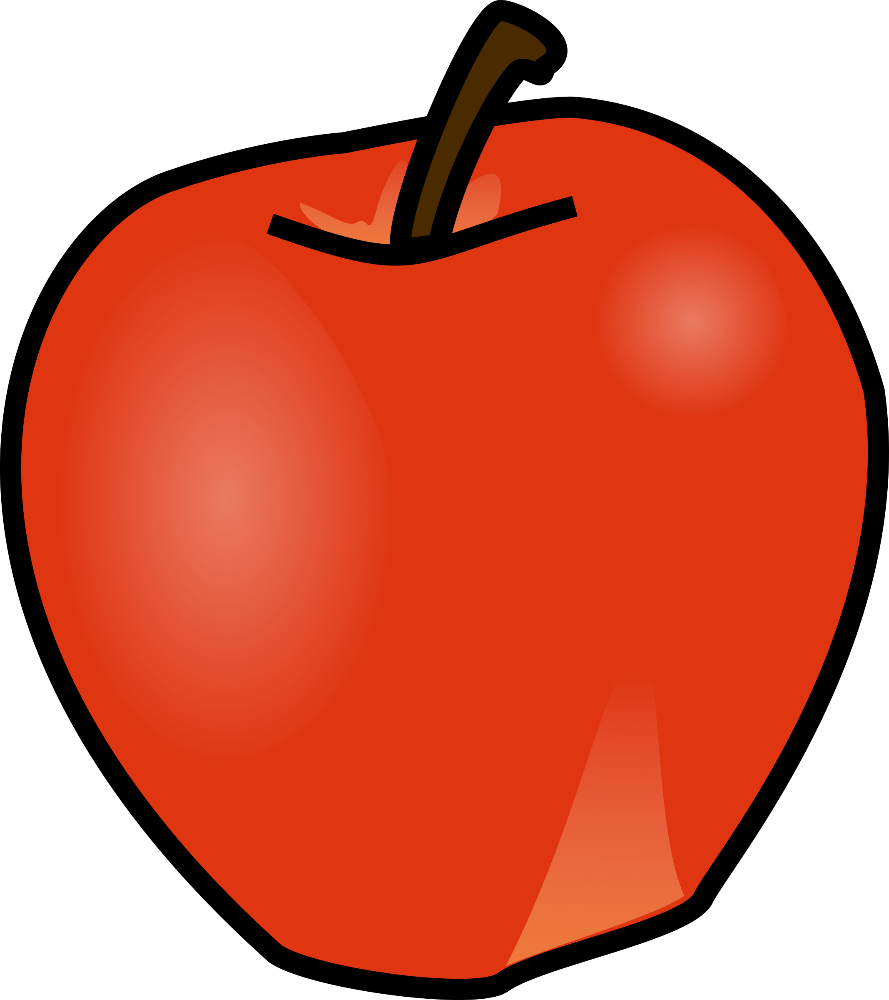
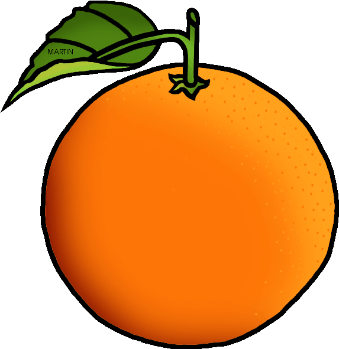

Bananas
Bananas (lot. Musa) – bananinių (Musaceae) šeimos žolinių augalų gentis, kurioje yra apie 80 rūšių.
Informacija

Bananas (lot. Musa) – bananinių (Musaceae) šeimos žolinių augalų gentis, kurioje yra apie 80 rūšių.
Informacija